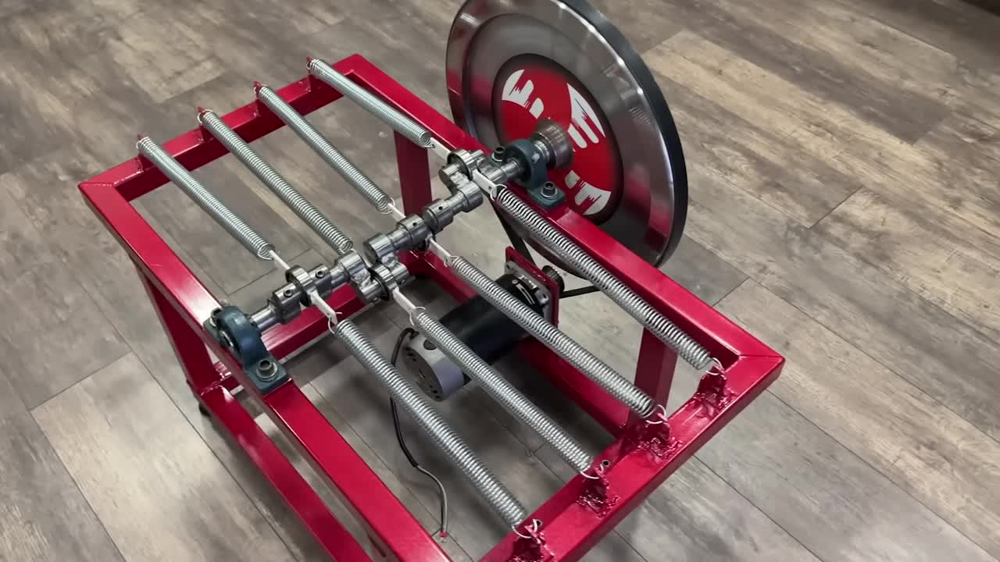
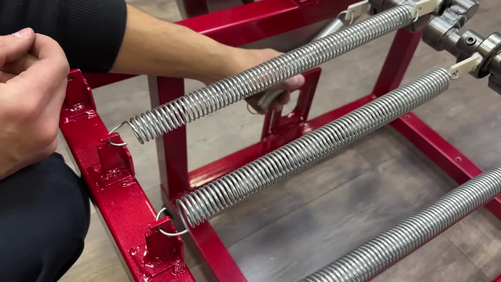
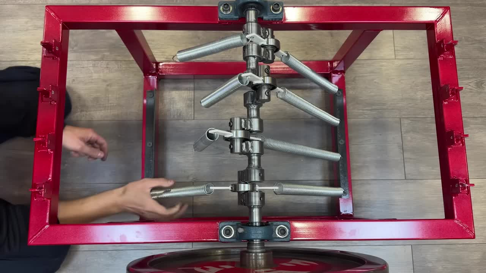
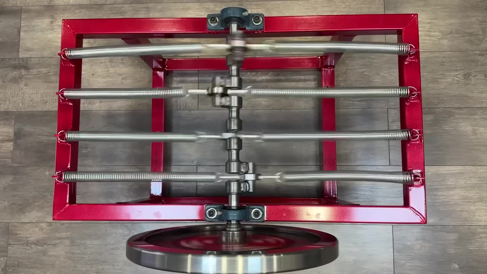
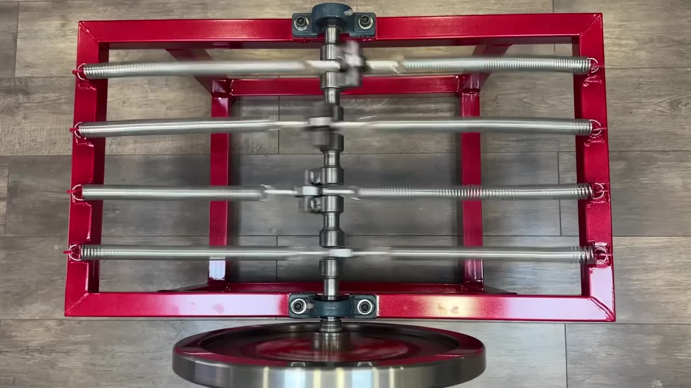
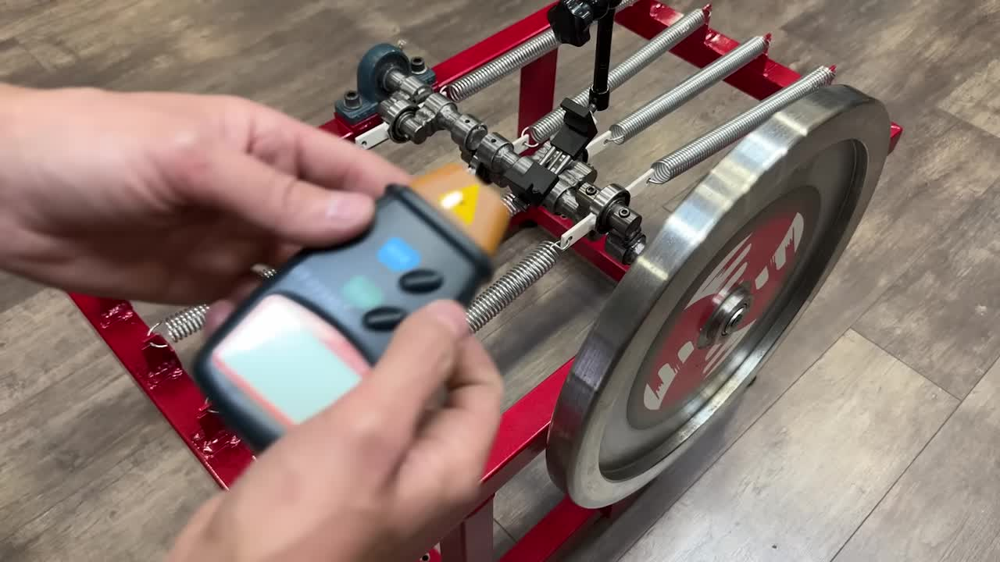
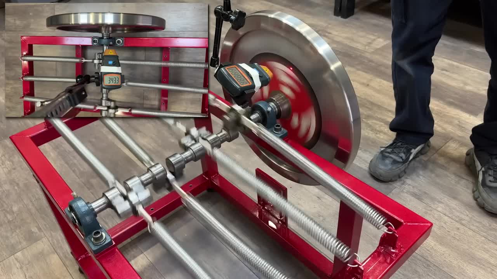

揭秘网络假象，实践物理原理，打造一个持续运转的机械系统。
这个项目深入分析了多种网络上流传的“永动机”视频，揭示了它们无法持续运转的原因。基于严谨的物理学原理，特别是动力学共振耦合，我们设计并制造了一个能够在获得初始动能后长时间持续旋转的飞轮装置。它并非能量凭空产生，而是通过优化能量在系统内部（弹簧与飞轮之间）的传递效率，最大限度减少损耗。
表面上看，这个黄色飞轮装置似乎仅靠弹簧就能持续旋转（如视频0:50所示）。
视频截图：看似自行旋转的装置
然而，仔细观察会发现异常的运动模式和倒放的声音（视频1:08-1:20）。当视频正常播放时（视频1:22开始模拟），可以清楚地看到机器的速度逐渐减慢。根据能量守恒定律，如果没有外部能量输入，任何实际的机械系统都会因摩擦、空气阻力、声波和热量等损耗而最终停止。弹簧只能储存有限的弹性势能（E = 1/2 kx²），释放完毕后，系统无法自我驱动。
视频截图：正常速度播放，机器正在减速
另一个案例尝试使用V形排列的弹簧（视频2:09所示）。
视频截图：V形弹簧装置尝试
尽管有弹簧，但这种配置下的弹簧力分解后，水平分力互相抵消，垂直分力则合力指向轴心（视频2:28）。根据牛顿第二定律的旋转形式（τ = I · α），其中 τ 是扭矩，I 是转动惯量，α 是角加速度，一个系统需要一个有效的扭矩才能产生持续的角加速度。在这种V形配置中，弹簧力未能产生持续的旋转扭矩（τ≈0）。轴主要承受的是径向压力，飞轮无法有效旋转。它缺少产生有效旋转力矩的关键几何结构，例如一个第三受力点或不同的弹簧布局（视频4:43）。
视频截图：受力分析示意图
基于对前述失败案例的分析，我们调整了设计，使其符合物理原理，特别是利用了动力学共振耦合 (Cinematic Resonant Coupling)（视频5:10所示）。
视频截图：我们的飞轮装置设计
通过巧妙布置四对（共八个）弹簧，并将它们连接到经过特别设计的曲轴上，并在框架上设置相应的连接点（视频3:15-4:01的改装过程）。
视频截图：弹簧连接过程
视频截图：弹簧安装完成
当飞轮获得初始动量后，曲轴的转动会引起弹簧的周期性压缩和伸长，产生线性振荡。这种振荡在恰当的设计下（特别是曲轴上连接点之间的角度差，本设计中为90度），能够将弹簧储存的弹性势能高效地转化为飞轮的转动动能，弥补机械损耗，从而维持持续的旋转（视频5:24所示的弹簧运动）。
视频截图：动力学共振耦合下的弹簧振荡
这种共振现象可以近似用以下公式描述有效共振角频率 ωres：
keff / J - (b / (2J))2 )
keff = 弹簧组合等效弹性常数, J = 飞轮转动惯量, b = 系统阻尼系数
通过精心调整系统的弹性常数、转动惯量和阻尼，使激振频率接近系统的自然共振频率，能量传递效率极高，足以克服主要的机械损耗，实现飞轮在没有外部持续动力输入的情况下保持高速稳定旋转。
视频截图：系统在共振状态下运转
我们在移除外部电机（视频6:00）后，通过给予飞轮一个初始推动（视频8:59），系统开始运转并使用激光测速仪（视频8:36）测量转速。
视频截图：测量转速
视频截图：测速仪显示稳定转速
可以看到，系统持续加速，最终稳定在一个接近 700 RPM 的转速（视频9:49），并能长时间维持这一速度。这证明了动力学共振耦合原理在精心设计的机械系统中是有效的。
我们通过实验证明了为什么有些“永动机”是假的，以及一个基于物理原理的飞轮装置如何能持续运转。如果您对分析其他类似视频感兴趣，或者想了解更多科学背后的秘密，请在下方评论区告诉我们！
分享此视频，加入能源革命！
点赞并订阅我们的频道！
成为会员支持我们的视频制作！
感谢观赏！